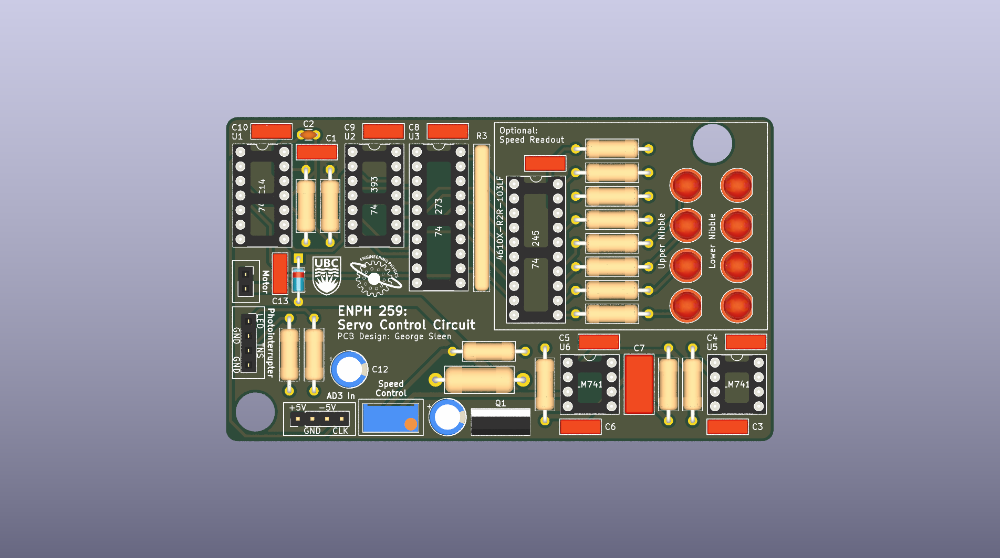
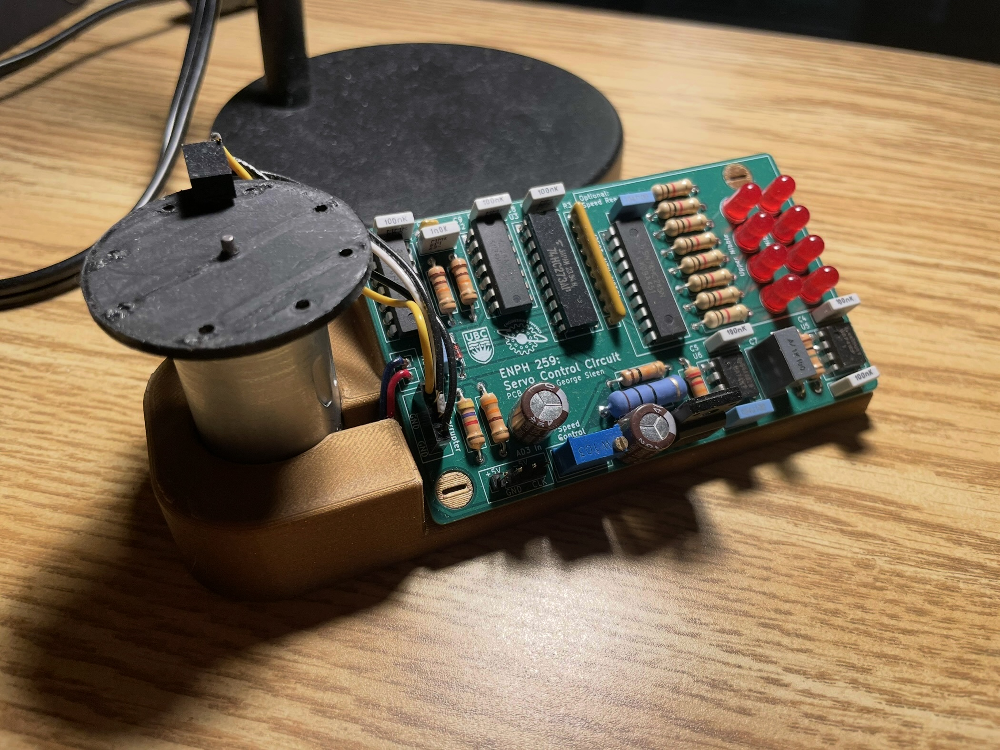
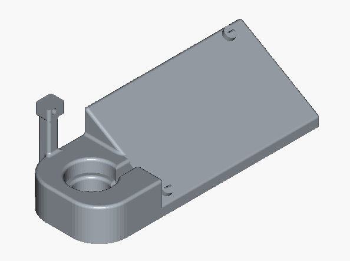

Continuous Servo Control PCB
Overview
This project was an extension of my ENPH 259 final project, where I designed and built a custom circuit and PCB to control a continuous-rotation servo motor.
The goal was to replace the internal control electronics of a hobby servo with a standalone, feedback-stabilized driver that could be powered externally and provide smoother, more accurate speed control.
My Contributions
- Designed the full control circuit in KiCad, including feedback, comparator, and MOSFET driver stages.
- Created the PCB layout, ensuring signal integrity between the digital counting stages and the analog PI controller.
- Assembled and tested the board, debugging issues with clock timing and feedback resolution.
- Integrated the motor with a mechanical disk encoder to generate feedback signals.
Technical Highlights
- Speed Feedback: A slotted encoder disk generated pulses, which were counted and latched to represent motor speed in binary.
- Digital-to-Analog Conversion: The binary counter output was fed into an R-2R DAC, producing an analog voltage proportional to measured speed.
- Reference Comparison: A comparator compared the measured speed voltage against a reference input.
- Control Loop: A PI (proportional–integral) controller smoothed the error signal and stabilized speed regulation.
- Output Stage: The processed control voltage drove a MOSFET H-bridge to power the DC motor.
- Inputs/Outputs: The system required ±5 V, ground, and a 5 Hz clock signal to operate.
GitHub
github.com/georgesleen/continous-servo-pcb
Media
-
PCB layout render

-
Assembled board with servo

-
Schematic (page 1)

-
PCB front (page 1)
-
Lab setup screenshot

Reflection
This project was my first time designing a complete closed-loop motor control system in hardware. It forced me to combine digital counting and DAC conversion with analog PI control, all integrated on a custom PCB.
Through this build, I gained practical experience in:
- PCB layout for mixed digital/analog systems
- Debugging timing and feedback issues
- Designing a control loop that balances responsiveness with stability
The final system successfully demonstrated that a low-cost servo can be transformed into a continuously controllable actuator using custom electronics.